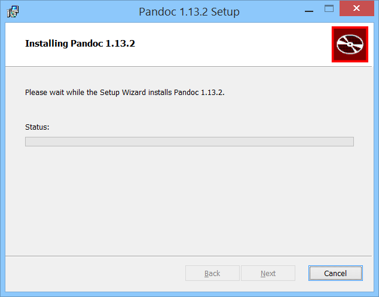
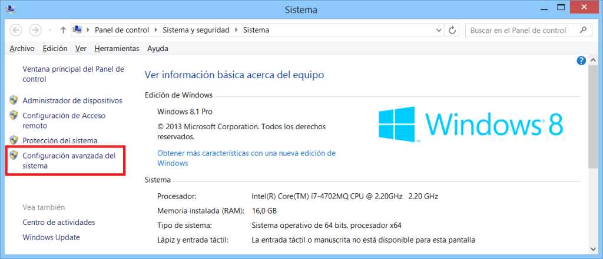
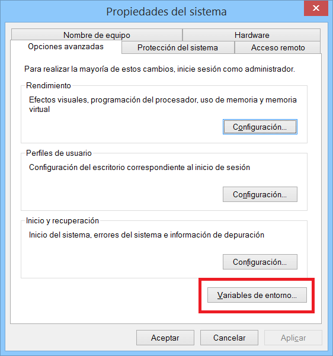
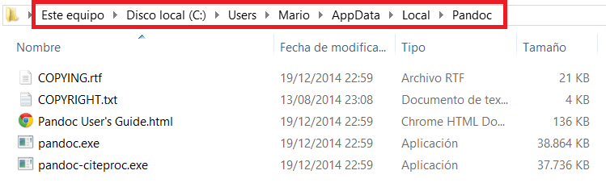
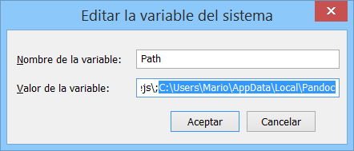

Instalación de Pandoc en Windows

- Paso 2. Cuando esté Pandoc instalado, debemos añadirlo a las variables de entorno de Windows, ya que si no lo hacemos, Sublime Text no podrá ejecutar el comando. Para ello, vamos a la configuración avanzada del sistema:

- Paso 3. Se abrirá una ventana y tenéis que hacer click en "Variables de entorno":

- Paso 4. Ahora tenéis que copiar como texto (click derecho, "copiar como texti") la ruta del directorio de instalación de Pandoc:

- Paso 5. La dirección que habeis copiado la teneis que introducir en la variable Path

Una vez llegueis a este punto, todo listo.